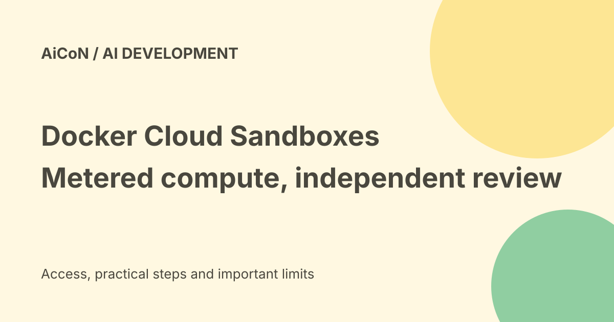

Docker Cloud Sandboxes: compute prices, session limits and agent safety
Docker Cloud Sandboxes move coding-agent work into Docker-managed cloud compute. Local sandboxes remain free, but cloud compute is pay-as-you-go and model inference can be billed separately. Isolation reduces some risks; it does not prove the generated code is correct.

What runs in the cloud?
Docker describes each sandbox as a microVM with its own kernel and Docker daemon. A microVM is a small virtual machine. Its boundary separates the agent's environment from your laptop.
A cloud sandbox can continue running after your laptop shuts down. The service manages compute, so you do not have to provision a separate server for every task.
Local and cloud are related, not identical
The launch describes moving a sandbox and its filesystem between local and cloud environments. However, it also says secrets, templates and network policies are separate on each side.
Do not assume that moving files also copies safe permissions or the right credentials. Inspect the cloud settings before allowing the agent to continue.
Cloud pricing
The checked pricing lists hourly rates in US dollars: Micro at 0.07, Small at 0.14, Medium at 0.28, Large at 0.56 and XL at 1.12. Compute is metered by the second.
At Small's listed rate, ten running hours cost 1.40 dollars in compute for one sandbox. Ten such sandboxes running for ten hours cost fourteen dollars. That calculation excludes model requests, taxes and currency-conversion charges.
What is free?
Docker says a paused sandbox costs nothing and lists volumes, egress, public images and Kits as free in this offer. Local Docker Sandboxes remain free and standalone, with no Docker Desktop required.
That is not a claim of unlimited free cloud execution or a confirmed introductory allowance. A Docker Personal account still needs the pay-as-you-go plan for this cloud route.
Model costs remain separate
The service supports bringing your own model key. Requests can be charged by that provider even when the sandbox compute is inexpensive.
For an Indian user, check the final dollar bill, tax and card-conversion terms. Set limits for compute and inference, particularly before running several agents at once.
Session duration
The launch states that sandboxes run for one hour by default and up to twenty-four hours per session.
Always-on cloud infrastructure is not the same as an unlimited individual session. Choose a suitable duration and understand what happens at timeout before starting overnight work.
Setup requirements
The launch lists sbx version 0.45.1 or later and pay-as-you-go access on Docker Personal or Pro. It describes a web console route and a terminal route.
Use Docker's current product links and instructions. Review the selected kit, resource size, repository access, network policy and timeout before clicking Run. No account, installer or cloud job was used for this guide.
Secrets and network controls
Docker describes proxy injection of cloud secrets per request so the agent does not receive the secret value directly. It also describes endpoint policies that limit network access.
Those design controls are useful but not a universal guarantee against misuse. An agent may still take an unwanted action through an allowed service or change files it can access. Test the actual boundaries for your workflow.
A safe first task
- Start with an expendable repository copy.
- Choose a small resource size and short duration.
- Limit network access to necessary endpoints.
- Keep production credentials out.
- Review compute and model budgets.
- Assign one clear task with a testable result.
- Inspect logs and changes before merging.
- Pause or stop unused work and verify its status.
Backups and independent tests still matter. Isolation protects an environment boundary, not the quality of the code written inside it.
Parallel work multiplies spend
The launch discusses running many independent tasks. Every running sandbox contributes compute use, and each agent can generate model requests.
Do not start dozens of jobs merely because the platform supports them. Begin with one task, measure its use and inspect the bill before scaling.
What changed since the original post?
We add exact listed compute rates, the one-hour default and twenty-four-hour session maximum, separate model billing and the difference between local and cloud settings. The guide does not repeat an unverified free-cloud allowance.
Frequently asked questions
Will closing the laptop stop a cloud job?
The cloud service is designed to keep it running, subject to session limits.
Is cloud compute free?
No. Running compute is metered.
Can I merge the result without review?
No. Review changes and run independent tests.
Sources: Docker launch, rates and setup limits · Current Docker Sandboxes product pricing · InfoQ technical reporting. Checked 7 October 2026.